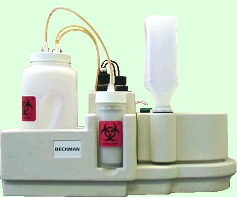
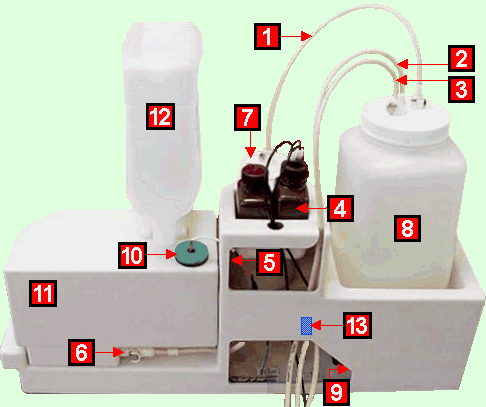
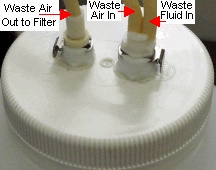
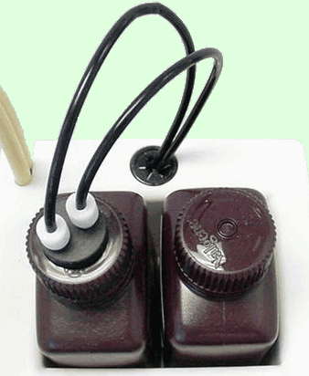
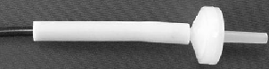
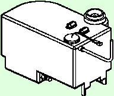
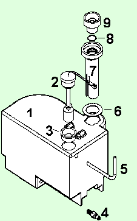

Unibase Fluids Tray
Purpose
This document describes the Unibase fluids tray.
Front View

Component Identification

Note: Use the six-inch waste air filter on all versions of the fluids tray.
| Part | Description |
|---|---|
| 1 | Waste Air from Waste Bottle to Waste Air Filter |
| 2 | Waste Fluid from Bulkhead Fitting - See Waste Bottle Connections section of this procedure |
| 3 | Waste Air from Bulkhead Fitting - See Waste Bottle Connections section of this procedure |
| 4 | Substrate Bottles |
| 5 | Reservoir Vent Fitting |
| 6 | Buffer Reservoir Outlet Fitting. |
| 7 | Six-Inch Waste Air Filter Assembly |
| 8 | Waste Bottle |
| 9 | Waste Bottle Level Sensor |
| 10 | Buffer Reservoir Level Sensor |
| 11 | Buffer Reservoir |
| 12 | Buffer Supply Bottle |
| 13 | Wash buffer Tubing Clamp (applied to inner surface) |
Waste Bottle Connections
The tubing connections to the Waste Bottle Cap are critical. The connections must be as shown.Note: The internal bubble breaker is no longer used.

Substrate Bottle Connections


Unibase Reservoir


| Part | Description |
|---|---|
| 1 | Reservoir Tank |
| 2 | Reservoir Level Sensor |
| 3 | Reservoir Level Sensor Gasket |
| 4 | Reservoir Filter Screen Fitting |
| 5 | Reservoir Vent Tubing |
| 6 | Reservoir Receptacle Rubber Gasket |
| 7 | Reservoir Receptacle Assembly |
| 8 | Buffer Bottle Rubber Gasket |
| 9 | Buffer Bottle Valve Assembly |